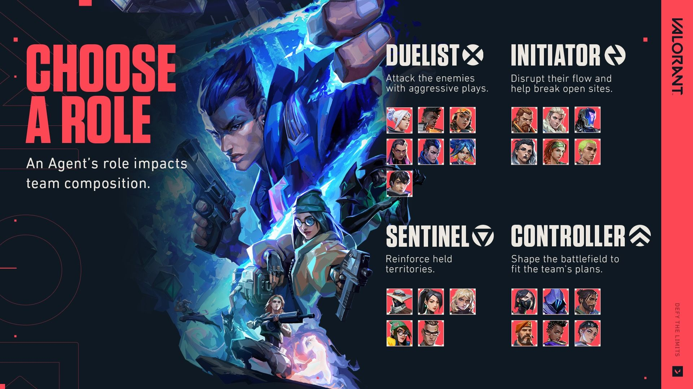
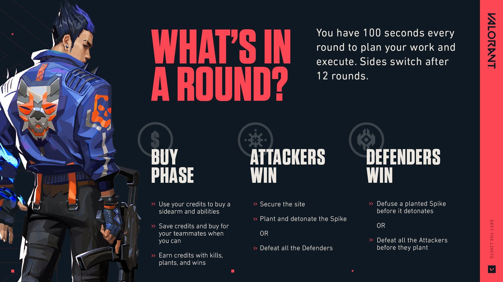
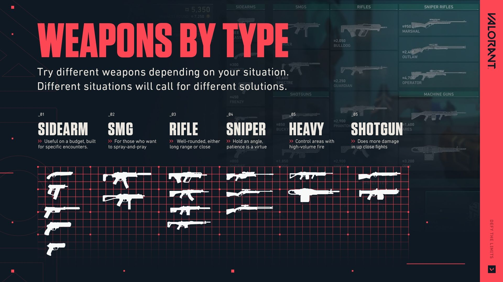
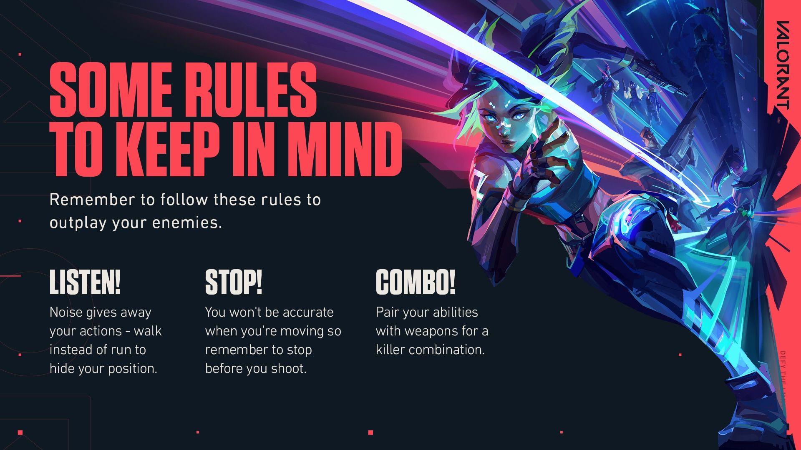

BEGINNER'S GUIDE
Welcome to the VALORANT Beginner’s Guide! Whether you’re new to the club or need a refresher, we’re here to cover everything you need to know to have a good grasp on the game. This page also includes various video guides made for you by some of the most beloved and respected players in our community. They’re pretty cracked so you should check them out.
Need a TL;DR? The following video from Tarik provides a great runthrough of the basics you need to know to start your first game.
AGENTS
Before you enter your first round, you’ll enter Agent Select. Here you’ll pick from a group of 24 Agents currently, all divided into four different roles based on their functionality. You'll notice that you won't have all the Agents unlocked with a new account. But the more you play, the faster you'll be able to unlock them!
Each Agent has their own unique set of skills designed to work alongside each other toward a win. While it’s not mandatory to have each role in your team of five, you’ll discover that you have a higher chance of winning when your team has a more diverse Agent pool where each player has a specific duty. For example, it’ll be easier to get onto a site if you have a Controller who can smoke the sight lines enemies might be watching!
ROUNDS and ECONOMY
After everyone selects their Agent, you’ll jump into a random map and formally enter the first round.
You’ll start a round as either an attacker or defender and switch sides after 12 rounds. Before each round officially starts, you’ll have a period of time where you can buy items and skills to prepare for the round. Your Agent and playstyle should influence what you want to buy based on the amount of credits you have. Do you want to purchase a skill that heals your team or do you want a stronger weapon to defeat your enemies?
Depending on whether you’re an attacker or defender, you will either try to plant the spike and have it detonate, or you’ll defuse the spike after the enemy team has planted it. Either way, eliminating your enemies will make the job a lot easier.
For more information, here’s iiTzTimmy to explain more about how rounds and spending credits work for both teams [0:27].
WEAPONS
In VALORANT, there’s a gun for every situation. You can comb the details of each weapon on our dedicated
When in doubt, try buying based on a weapon’s type and see how it fits your style, expertise, and your team’s strategy. Since you won’t always be able to afford the weapon you want, experiment with different ones to figure out which ones you like the most so you can be ready for every situation.
MAP
There are currently 11 maps in VALORANT that you can check out and each one is a different stage to style on your enemies. Flex your creative skills and savvy gunplay to implement different strategies depending on the map you play. Learn and remember them so you can figure out where your enemies can come from and watch those angles. Don’t forget to check your corners!
You may prefer playing certain Agents on certain maps more based on your playstyle. Some maps have high platforms that will make an Agent that allows you to jump or teleport there more enticing. Mixwell goes into more detail about selecting certain Agents for certain maps based on their kit in the following video.
TIPS
Now that you know the basics, there are a few other details you’ll need to remember that’ll help you execute your plan. Throughout each round, ask yourself: ‘Do I want the enemies to hear me run up or should I walk?’ ‘Can I use an ability to help me achieve my next goal?’ And when you see an enemy, stay calm. Stop moving before shooting to be more accurate.
COMMUNICATION
Communication is key (said every person ever) —and this rings true for VALORANT as well. Whether it’s delivering information about where an enemy is to your team, or cheering on a teammate after they get a sick 1v3, communicating should always be a priority. Don’t want to use voice chat? Ping a location for where the enemy is and use in-game voice lines from your Agent to communicate what you need.
Still not convinced? Here’s TenZ to smooth talk his way into making sure you understand the importance of communication [4:40].
SETTINGS
While you begin to hone in your gameplay, check out your settings to make sure they’re optimized for how you want to play. Settings can be complicated and intimidating to adjust so here’s Kyedae to go over the most important ones [0:22].
While VALORANT is competitive at its core, that doesn’t mean everything is always set to. If you need a break from Competitive or just wanna goof around with your friends, try other game modes like Unrated and Swiftplay. The loss doesn’t feel so bad when you don’t have RR (Rank Rating) to lose!
Don’t believe us? Check out this video from Starsmitten about the different game modes that truly encapsulates the chaotic (but fun!) time that is VALORANT. Consider this your
That’s it from us for the VALORANT Beginner’s Guide! Haven’t had enough? We’ll keep you updated on the latest Agents, Maps, and more on